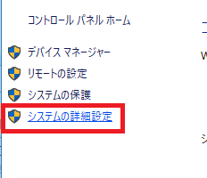

[Java スタディ - 1] Javaとは？、Javaインストール、Eclipseインストール
こんにちは。明月です。
今日まで「C#」について勉強しましたが、今日から「Java」についても勉強しようかと思います。
「C#」と「Java」の場合は互いに似ている言語だし、文法も似ているので、事前に一緒に「C#」を勉強した方は「Java」も簡単に習得できる言語ではないかと思いになります。
とりあえず、「Java」について調べてみます。
Javaについて
「Java」は1991年代にジェームズ・ゴスリンとその人のチームによって開発されて1995年に発表しました。初めは家電製品等のため開発されましたが、現在はウェブアプリケーションで一番人気があるプログラム言語になりました。
現在、「Java」はサン・マイクロシステムズによって無料で提供しているし、「Java」のバージョンは12.0まで発表しました。
「Java」の場合は「C#」を比べて値段が安いですが、安いって言うのは「C#」がお金がかかることではなく、Javaの環境を作るように立ち上がるシステムが無料オープンソースが多いですね。
例えば、サーバの場合はCentOSがあるしIDEツールでも「Eclipse」、「NetBeans」があるます。そしてウェブサーバ、アプリサーバの「Apache」、「Tomcat」、「GlassFish」、「JBoss」がすべて無料なので、システムを立ち上げる時、比較的に安く構築ができますね。
そうすろとこれからJavaを開発するようにJavaのインストールとEclipseをインストールします。
最近のWindows環境だと基本的にJavaがインストールされていますが、最新バージョンをダウンロードします。
(参考：JavaのバージョンはOracleバージョンとOpenJavaバージョンがありますが、Oracleの場合は最近著作権の問題で一応無料ですが、念のためOpenJavaでインストールします。)
Javaインストール
リンク - https://jdk.java.net/12/

上のリンクを接続してopenJDK12をダウンロードします。ホームページ見るともう32ビットとプログラムを存在もしないですね。32ビットを利用したいなら、仕方がなくてoracle JSKを使うしかないですね。
ダウンロードが完了すれば適当なところで圧縮を解凍します。私の場合はd:\javaに解凍しました。
Javaをインストールしましたら、これからはPathを設定します。


そしてシステム環境設定の「JAVA_HOME」をd:\javaに設定します。もし、JAVA_HOMEの変数がなければ生成します。
これから「Windowキー」 +「R」を打ってCMDのウィンドウを開きます。そしてコマンドで「java -version」を打ってバージョンが表示されるとJavaが正しくインストールされたかを確認できます。

Eclipseインストール
これからJavaの開発ツール(IED)のEclipseをインストールします。実は開発ツールはEclipseではなく色々がありますね。でも私の場合はEclipseしか使えないし、他のツール、例えばNetBeansはすごく不便でした。多分、私の使い方を知らないからそうだと思いましたが、自分の個人的な感情はEclipseが一番いいではないかと思います。
リンク - https://www.eclipse.org/downloads/packages/
実はグーグルでただ検索してダウンロードしても構いないですが、ただStandardバージョンを使うと後でウェブサービスを開発する時に一々パッケージをインストールしなければならないので、すごく面倒になります。なので、基本的なパッケージがインストールされているEnterprise versionをインストールする方が楽ですね。

ダウンロードが終われば、適当なところで圧縮を解凍します。私の場合はd:\eclipseに圧縮を解凍しました。
そしてEclipseを実行すればソースを格納するディレクトリを選択するポップアップでます。
これも適当なところで指定するとよいです。私の場合はd:\workspaceに作成しました。
すべてのインストールは完了しました。これからプロジェクトを生成してHello worldを出力します。


プロジェクトを生成しました。その後でクラスの中でmain関数を生成します。

public class Test {
public static void main(String... args) {
System.out.println("Hello world");
}
}
ソースを作成しましたら、デバックをします。


Hello worldの結果がでました。
- [Javaスタディ- 52] Java servletでインスタンスを初期する方法2019/10/17 07:15:48
- [Javaスタディ- 51] Spring web frameworkで発生する文字化けのEncoding設定2019/10/16 07:32:55
- [Javaスタディ- 50] Web Spring frameworkでfilter設定2019/10/15 20:12:35
- [Javaスタディ- 49] Web serviceのweb.xmlでエラーページ設定2019/10/14 20:13:44
- [Javaスタディ- 48] JPAのDAOをFactoryパターンで管理する方法2019/10/13 22:55:52
- [Java スタディ - 47] JPAのSpring frameworkで依存性注入する方法2019/10/13 00:40:08
- [Java スタディ - 46] JPAでDAOを生成する方法2019/10/11 07:30:14
- [Java スタディ - 45] JPAでトランザクションの使用方法とオブサーバーパターンで共通トランザクション関数を作り方2019/10/10 07:29:43
- [Java スタディ - 44] JPAのQuery を作り方2019/10/09 07:34:08
- [Java スタディ - 43] JPAのEntityクラス設定(Cascade, fetch)2019/10/08 07:43:33
- [Java スタディ - 42] JPAでpersistance.xml設定とentityクラス設定(@GeneratedValue設定)2019/10/07 07:38:13
- [Java スタディ - 41] EclipseでJPAフレームワーク設定する方法2019/10/04 19:24:43
- [Java スタディ - 40] Web spring frameworkのJSPで使う言語 JSTL - XML2019/10/03 20:02:06
- [Java スタディ - 39] Web spring frameworkのJSPで使う言語 JSTL - 関数、データベース2019/10/02 21:00:22
- [Java スタディ - 38] Web spring frameworkのJSPで使う言語 JSTL - コアー、フォーマッティング2019/10/01 21:48:08
- [CSS] アニメーション (animation)2019/12/20 20:51:38
- [CSS] トランスフォーム (transform)2019/12/19 13:00:26
- [CSS] トランジション(transition)2019/12/18 20:33:57
- [CSS] Columnスタイル2019/12/17 19:52:56
- [CSS] 整列スタイル (float)2019/12/17 00:08:54
- [CSS] 位置(position),表示(display)スタイル2019/12/13 20:08:50
- [CSS] border(枠)、余白スタイル - border, margin, padding2019/12/12 20:16:43
- [CSS] 文字スタイル2019/12/11 21:13:22
- [CSS] その他の疑似選択子 - link, visited, target, enabled, disabled, not, active, hover, focus2019/12/10 07:31:28
- [CSS] 疑似要素選択子 - fist-line, first-letter, before, after2019/12/09 07:28:27
- [CSS] 属性選択子2019/12/06 07:27:36
- [CSS] 疑似クラス - only-child, only-of-type, empty, empty, root2019/12/05 07:29:15
- [CSS] 疑似クラス - first-child, last-child, first-of-type, last-of-type2019/12/04 07:28:37
- [CSS] 疑似クラス - nth-child, nth-of-type, nth-last-child, nth-last-of-type2019/12/03 07:21:20
- [CSS] 属性選択子2019/12/02 07:32:37